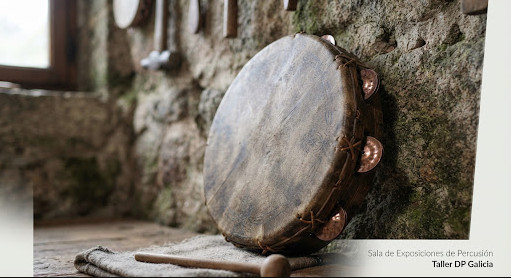
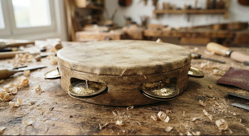
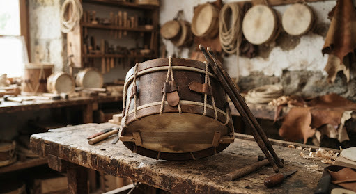
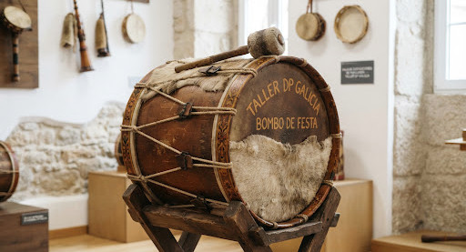
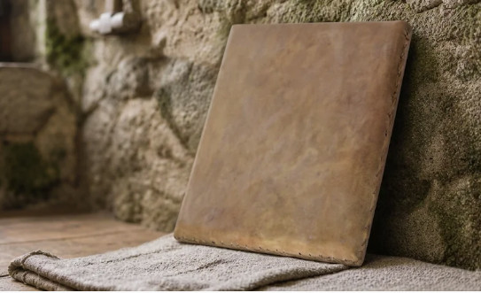
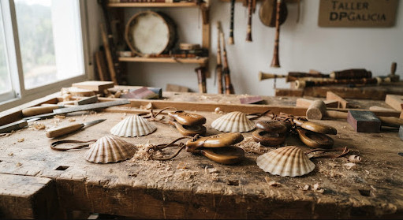

Montaña de LugoPandeira de Folgar
Aro de 32 cm para unha resonancia profunda en bailes soltos e foliadas da montaña.
Madeira: Castiñeiro curado
Parche: Cabra desgrasada
Ferreñas: 14 pares · Cobre batido

Unha colección viva de instrumentos etnográficos que conta con parches, madeiras nobres e elementos metálicos sonoros fabricados cunha aliaxe exclusiva. Seis pezas maxistrais, representativas das rexións históricas de Galicia, están afinadas e listas para seren escoitadas no espazo de interpretación.

Montaña de LugoAro de 32 cm para unha resonancia profunda en bailes soltos e foliadas da montaña.
Madeira: Castiñeiro curado
Parche: Cabra desgrasada
Ferreñas: 14 pares · Cobre batido

Costa da MorteRecorte ergonómico para unha suxeición lixeira e sostida durante o canto polifónico.
Madeira: Cerdeira silvestre
Parche: Cabrito o sol
Ferreñas: 10 pares · Latón templado

Ribeira SacraUn golpe limpo e unha afinación precisa para acompañar o canto das gaitas.
Madeira: Nogueira curada
Parche: Pergamino de ovella
Bordons: Tripa entorchada

Tui e Baixo MiñoCorpo resoador de 50 cm para un grave seco e rotundo.
Madera: Abedul y Fresno
Parche: Cabra grosa
Batedor: Corcho e Fieltro

SoutomaiorMarco cuadrangular tradicional con cosido cruzado de liño.
Madeira: Piñeiro do país
Parche: Doble pel cosida
Interior: Cascabeis de bronce

Santiago e RíasPezas de percusión menor para acompañamento de muiñeiras.
Material: Buxo e Cunchas
Acabado: Aceite de liñaza e cera
Uso: Repique tradicional
Visitas guiadas en grupos reducidos de ata 10 persoas, que inclúen unha demostración da afinación dos instrumentos e unha proba acústica dos mesmos. De martes a sábado, ás 10:00 h e ás 12:00 h.